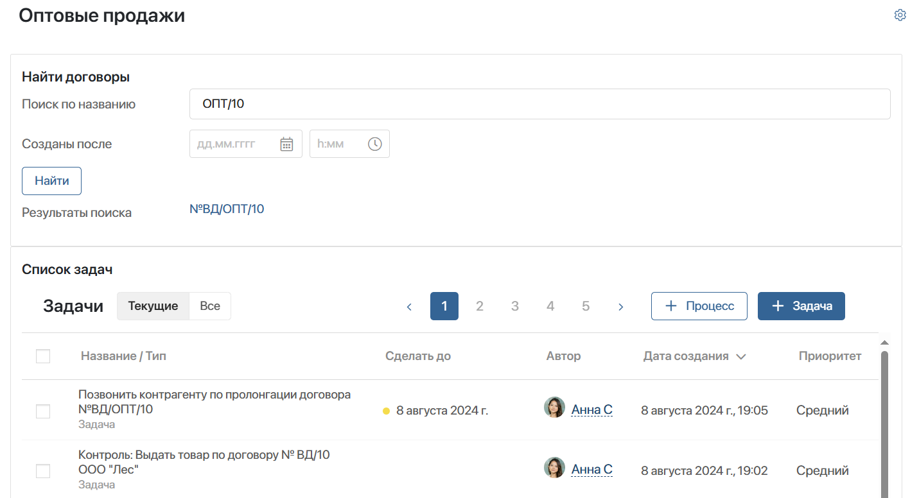
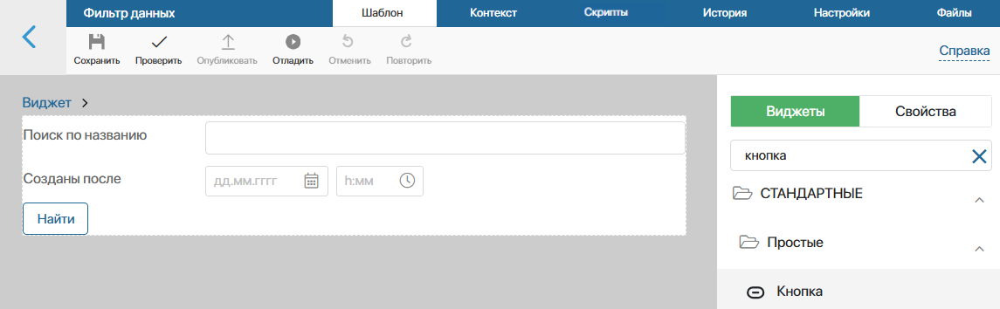
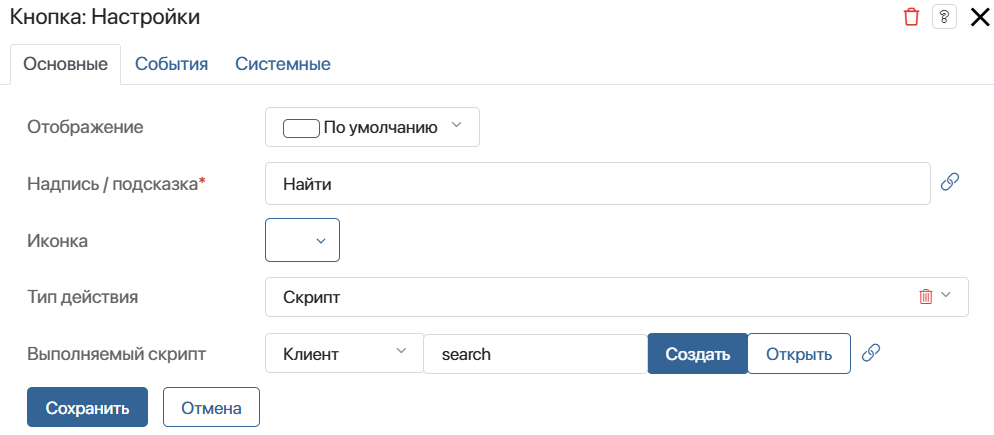
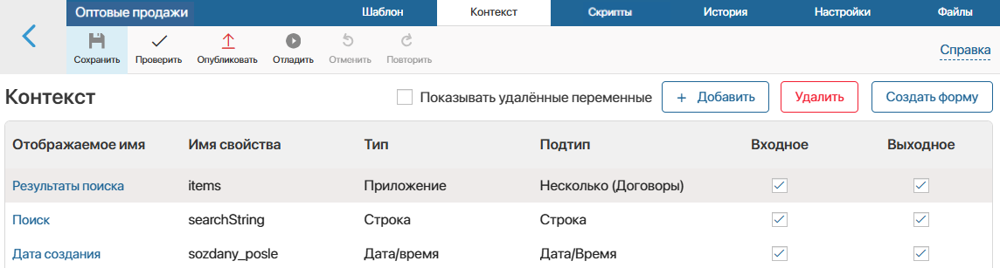
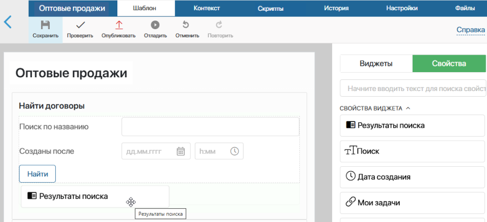
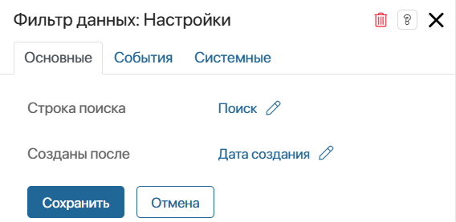
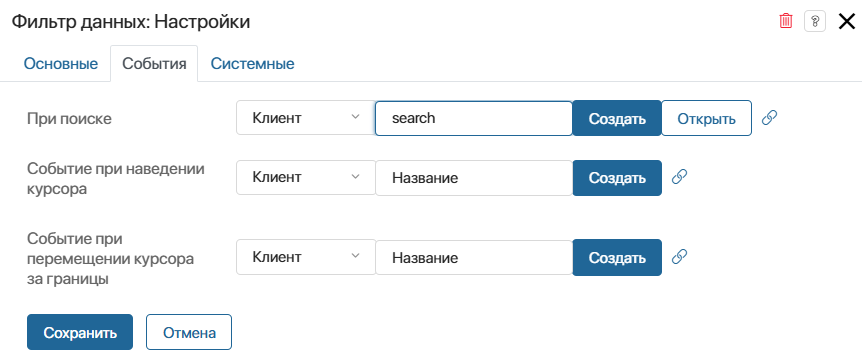

В ELMA365 вы можете создать пользовательское событие в виджете и передать его в другой виджет. Событиями могут быть нажатие кнопки, ввод данных в поле и т. д. Чтобы зафиксировать его, в контексте виджета добавляется поле типа Событие. При размещении виджета на форме или странице пользовательское событие отображается в настройках виджета на вкладке События. Вы можете работать с ним так же, как и с системными событиями, доступными по умолчанию.
Рассмотрим примеры использования переменной данного типа:
- Передача события из дочернего виджета в родительский — в дочернем виджете создаётся переменная типа Событие, а в родительском — к ней привязывается скрипт. Рассмотрим пример в данной статье.
- Передача события между дочерними виджетами, которые расположены на одном родительском. Комплексный пример с использованием различных функций и дополнительных переменных. Подробнее о нём читайте в статье «Передать событие между двумя дочерними виджетами».
Предположим, что в системе создана страница Оптовые продажи со списком задач. Для быстрого поиска договоров на ней также размещён дочерний виджет Фильтр данных. Когда пользователь указывает значения в полях виджета и нажимает кнопку Найти, на странице выполняется поиск по введённым параметрам и отображаются его результаты.
Действие фильтрации данных выполняется в дочернем виджете. После его исполнения событие о нём передаётся по нажатию кнопки в родительский виджет, т. е. страницу. Таким образом на странице пользователь сможет увидеть результаты поиска.

Рассмотрим подробнее, как выполнить настройку такой передачи данных.
Шаг 1. Создать виджет «Фильтр данных» и настроить передачу события из него
Начните настройку с создания дочернего виджета. В нём нужно:
- добавить свойства для поиска;
- создать переменную типа Событие, к которой в родительском виджете нужно привязать скрипт для выполнения поиска;
- разместить кнопку Найти, чтобы при её нажатии передать событие в родительский виджет.
Для этого:
- Создайте виджет Фильтр данных со следующими переменными:
- При поиске — служебная переменная типа Событие. Она будет использована в скрипте, который передаст событие, произошедшее в виджете;
- Строка поиска — переменная типа Строка. В этом поле пользователь укажет название нужного договора;
- Созданы после — переменная типа Дата/время. Здесь можно указать дату создания договора для его поиска.

- Вынесите на шаблон свойства Строка поиска и Созданы после. Также добавьте виджет Кнопка с названием Найти.
- В настройках виджета Кнопка укажите скрипт с переменной типа Событие, чтобы передать событие, когда пользователь нажмёт Найти.
Для этого справа от поля Выполняемый скрипт нажмите Создать, введите название функции search и выберите Сохранить, а затем — Открыть. На вкладке Скрипты создастся асинхронная функция. Добавьте в неё следующий скрипт:
async function search(): Promise<void> {
Context.data.onSearch!.emit();
}
- Сохраните и опубликуйте виджет Фильтр данных.
Теперь его можно использовать в других виджетах как дочерний для настройки быстрого поиска элементов любых приложений.
Шаг 2. Разместить виджет на странице и настроить скрипт при получении события
На готовую страницу Оптовые продажи со списком задач добавьте созданный виджет. Страница станет для него родительским виджетом. Для этого нужно:
- создать в её контексте переменные, чтобы записать данные фильтрации и найти договоры;
- разместить на ней созданный на первом шаге виджет и поле для отображения результатов поиска;
- в настройках добавленного виджета указать скрипт в пользовательском событии, чтобы находить нужные элементы при получении события о нажатии кнопки Найти.
Выполните эти действия:
- Откройте настройки страницы Оптовые продажи и перейдите в дизайнер интерфейсов, нажав опцию Конструктор.
- На вкладке Контекст создайте переменные:
- Результаты поиска — переменная типа Приложение с опцией Несколько. Выберите приложение Договоры. Здесь пользователь увидит найденные элементы, когда нажмёт кнопку Найти;
- Поиск — служебная переменная типа Строка;
- Дата создания — служебная переменная типа Дата/время.
В переменные Поиск и Дата создания будут записаны значения соответствующих полей из виджета Фильтр данных, когда пользователь в нём нажмёт кнопку Найти.

- На вкладке Шаблон вынесите созданные ранее:
- виджет Фильтр данных с боковой панели Виджеты;
- свойство Результаты поиска.

- Откройте настройки виджета Фильтр данных. На вкладке Основные свяжите поля виджета с переменными из контекста страницы. Теперь значения, которые пользователь введёт для поиска договоров, запишутся в контекст страницы.
- На вкладке События отобразится созданная ранее переменная При поиске типа Событие. К ней привяжите скрипт, который выполнит фильтрацию данных приложения Договоры, когда пользователь нажмёт кнопку Найти в виджете Фильтр данных.

Скрипт для фильтрации договоров при наступлении события
declare const alert: (msg: string) => void;
|
- Сохраните и опубликуйте страницу.
Теперь на ней можно находить элементы приложения Договоры по названию и дате создания.